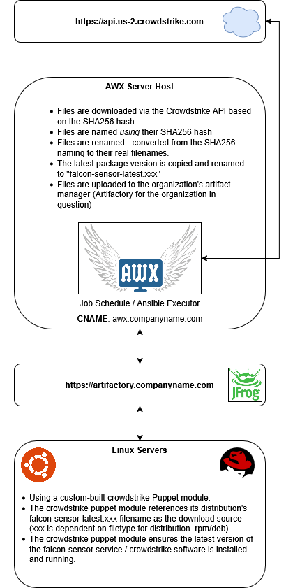

Overview
Designed and implemented an automated deployment pipeline for CrowdStrike Falcon Sensor across a heterogeneous Linux environment supporting over 4,000 servers. The solution ensured consistent, repeatable installation across multiple distributions and Puppet versions while maintaining control over artifact distribution and versioning.
Key Highlights
- Automated CrowdStrike deployment across multiple Linux distributions
- Deployed across thousands of Linux servers in a production environment
- Integrated AWX for scheduled artifact retrieval and pipeline orchestration
- Implemented Artifactory as a controlled distribution point for sensor packages
- Supported multiple Puppet generations across mixed Linux environments
- Ensured consistent versioning using SHA256-based artifact handling
Architecture Diagram

Click diagram to enlarge.
Architecture Explanation
The deployment pipeline was split into two primary stages to ensure reliability and control over software distribution:
-
Artifact Acquisition & Normalization:
Automation was used to retrieve, validate, and stage approved endpoint security packages. Files were validated using SHA256 hashes, normalized into consistent naming conventions, and stored in Artifactory. -
Deployment & Enforcement:
Puppet was used to install and enforce the desired state of the CrowdStrike agent across Linux systems. The module dynamically referenced the correct package based on OS distribution and version.
This separation ensured that endpoint systems did not rely on external vendor availability and allowed centralized control over approved software versions.
Implementation Approach
Due to proprietary constraints, source code for AWX and Puppet configurations cannot be publicly shared. However, the solution included:
- AWX playbooks for automated artifact retrieval and processing
- Custom logic to normalize vendor-provided package naming
- Puppet modules to enforce installation state across distributions
- Integration with Artifactory for controlled package distribution
Challenges & Solutions
-
Problem: Vendor packages had inconsistent naming and versioning
Solution: Implemented SHA256-based normalization and consistent naming in Artifactory -
Problem: Multiple Puppet versions across environments
Solution: Designed modules compatible with Puppet 4, 6, and 8 -
Problem: Direct vendor downloads introduce external dependency risk
Solution: Centralized artifact storage in Artifactory for reliability and control
Outcome
Standardized CrowdStrike deployment across all supported Linux platforms, eliminating manual installs and ensuring consistent, controlled rollout of approved sensor versions.